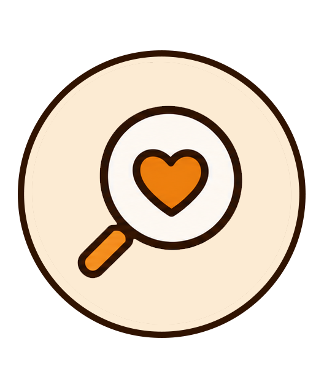
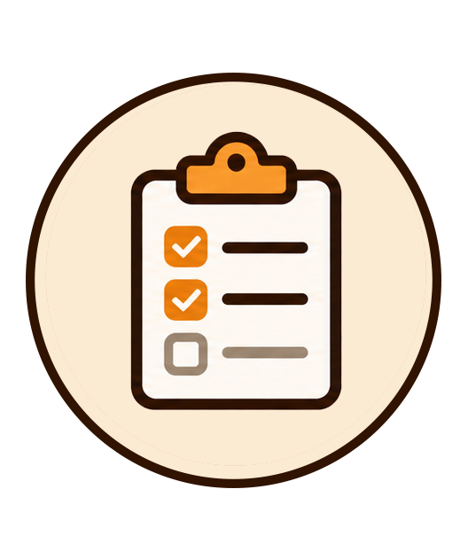
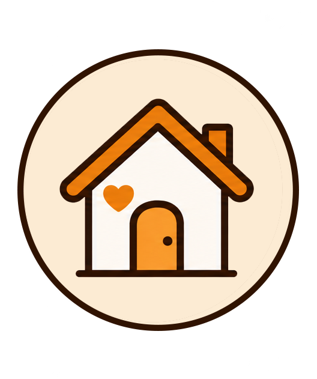
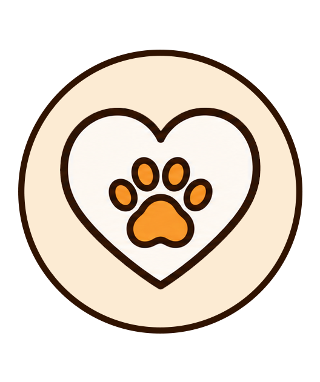

Um amigo para a vida toda está esperando por você
Adotar é um ato de amor que transforma vidas, a deles e a sua também.
COMO ADOTAR

1. Escolha seu amigoVeja os animais disponiveis e encontre o que combina com você.

2. Preencha o formulárioConte um pouco sobre você e o lar que você pode oferecer.

3. Entrevista e visitaFaremos uma conversa e, se necessário, uma visita à sua casa.

4. Adoção realizada!Tudo certo? Então é hora de dar boas-vindas ao seu novo melhor amigo.